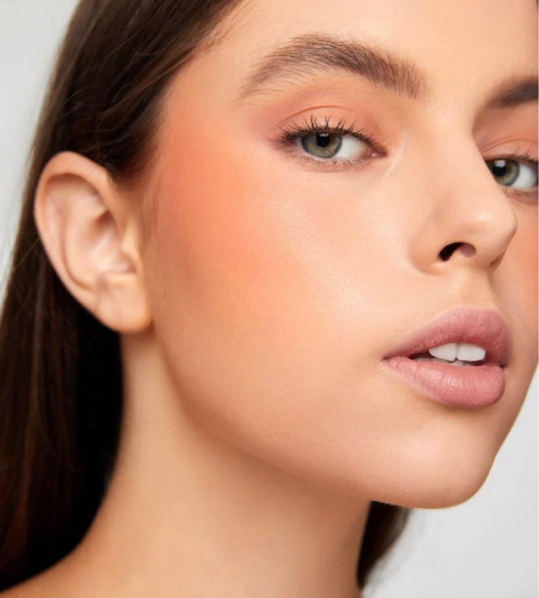

|
Delineado de Ojo de Gato
- Hacerlo con el ojo abierto.
- Alargar hacia afuera con una linea delgada.
- Juntarlo y rellenar con la linea interior del parpado movil.
|
 |
Delineado de Labios
- Tener punta marcada de el lapiz delineador.
- Comenzar de adentro hacia afuera.
- Marcar mas ancho el centro y el arco de cupido.
- Rellenar el resto del interior con labial de prefencia
|
 |
Blush/Rubor
- Aplicar rubor liquido al final de los productos liquidos o en crema.
- Sellar con polvo el maquillaje en crema.
- Sellar el rubor con mas rubor en polvo y una brocha.
|